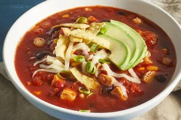

Chicken Tortilla Soup

delicious chicken tortilla soup
This chicken tortilla soup with shredded chicken, black beans, and corn is quick to make, full of flavor, and very filling! It's garnished with chopped fresh avocado, Monterey Jack cheese, crushed tortilla chips, and green onion. This soup freezes well.
If you're looking for a hearty and filling soup that will satisfy your Mexican food craving, then look no further. This chicken tortilla soup is the perfect comfort food that offers both spicy, Mexican-flair and hearty ingredients that will keep you full and happy.
Everyone will be slurping up this soup by the bowlful — so be prepared to make the tasty recipe again and again.
jump to Nutrition Facts
How to Make Chicken Tortilla Soup
Making this Chicken Tortilla Soup is really simple, and it only takes 35 minutes. You can find the full recipe below, but here's what you can expect:
Saute the onions and garlic, then add chili powder, oregano, tomatoes, broth, and water. Allow to simmer, then add corn, hominy, chiles, beans, cilantro, and chicken. Simmer for a few more minutes then serve topped with your favorite garnishes.
What to Serve With Chicken Tortilla Soup
Chicken tortilla soup is great on its own, or garnished with avocado, cheese, green onions, and sour cream. You can also serve it alongside crusty bread or a side salad for the perfect meal.
ingredients
- 1 tablespoon olive oil
- 1 medium onion, chopped
- 3 cloves garlic, minced
- 1 (28 ounce) can crushed tomatoes
- 1 (10.5 ounce) can condensed chicken broth
- 1 ¼ cups water
- 2 teaspoons chili powder
- 1 teaspoon dried oregano
- 1 (15 ounce) can black beans, rinsed and drained
- 2 large boneless chicken breast halves, cooked and cut into bite-sized pieces.
- 1 cup whole corn kernels, cooked
- 1 cup white hominy
- 1 (4 ounce) can chopped green chile peppers
- ¼ cup chopped fresh cilantro
- ½ cup crushed tortilla chips, or to taste
- 2 medium avocados, sliced, or to taste
- ½ cup shredded Monterey Jack cheese, or to taste
- 2 tablespoons chopped green onions, or to taste
steps to prepare
- Heat oil in a stockpot over medium heat. Add onion and garlic; saute until soft, about 5 minutes. Stir in crushed tomatoes, condensed broth, water, chili powder, and oregano; bring to a boil. Reduce heat and simmer for 5 to 10 minutes.
- Stir in black beans, cooked chicken, corn, hominy, chile peppers, and cilantro. Simmer for 10 minutes.
- Ladle soup into individual serving bowls, and top with crushed tortilla chips, avocado slices, Monterey Jack cheese, and green onions.
Nutrition Facts
(per serving)
| calories |
Fat |
Carbs |
Protein |
| 363 |
17g |
29g |
26g |
return to homepage